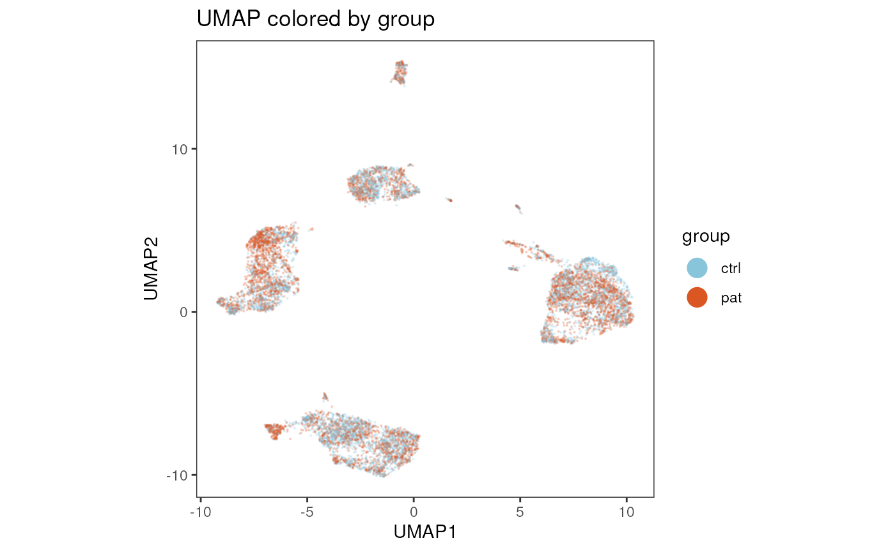
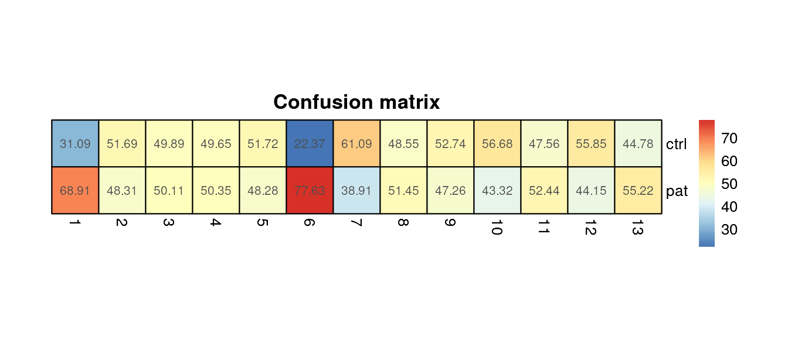

Getting Started
Here we describe a basic workflow to analyse high-dimensional
cytometry data with cyCONDOR. More detailed description of
all cyCONDOR functionalists and visualization tools can be
found in the Articles section. In this section we will describe
how to load data from a folder of FCS files, how to perform
dimensionality reduction and clustering together with some basic
visualization of the results.
We start by loading the cyCONDOR package.
Loading the data
With prep_fcd() you import the .fcs files
to your R session. The .fcs files should all be stored in a
single folder data_path. Additionally an
annotation table text file (anno_table) has to be
provided which contains a column with the file names of the
.fcs files and optionally addional sample information. This
is an example for an anno_table:
| filename | sample_id | condition |
|---|---|---|
| exp_x_sample1.fcs | sample1 | treatment |
| exp_x_sample2.fcs | sample2 | control |
Arguments:
data_path = Folder where the .fcs
files or .csv files are stored
max_cell = Number of cells to use for each
file
useCSV = Flag if the input are
.csv files and not .fcs
transformation = Transformation to perform
(“auto_logi”, “arcsinh”, “clr”, “none”)
remove_param = Parameters to be removed from
the fcd, “inTime” should be kept
anno_table = Path to the annotation table text
file.
filename_col = Name of the column containing
the file name matching with the .fcs/.csv
files
condor <- prep_fcd(data_path = "../.test_files/fcs/",
max_cell = 1000,
useCSV = FALSE,
transformation = "auto_logi",
remove_param = c("FSC-H", "SSC-H", "FSC-W", "SSC-W", "Time"),
anno_table = "../.test_files/metadata.csv",
filename_col = "filename"
)
class(condor)## [1] "flow_cytometry_dataframe"For more details on data loading, transformation and the general
structure of the fcd have a look at
vignette("Data_Loading_and_Transformation")
and vignette("Other_utilities").
Dimensionality Reduction
To reduce the complexity of the data set, we first perform a
principal component analysis (PCA) and use those coordinates for
non-linear dimensionality reduction applying e.g. the UMAP or tSNE
algorithm. See
vignette("Dimensionality_Reduction") for
further details and alternative methods. With this approach, we can
visualize the complexity of the data set in the two dimensional
space.
PCA
Arguments:
fcd = Flow cytometry dataset
data_slot = Data slot to use for the
calculation, e.g. "orig" or batch corrected
"norm"
condor <- runPCA(fcd = condor,
data_slot = "orig"
)UMAP
Arguments:
fcd = Flow cytometry dataset
input type = Data to use for the calculation of
the UMAP, e.g. “expr” or “pca”
data_slot = Data slot to use for the
calculation, e.g. "orig" or batch corrected
"norm"
condor <- runUMAP(fcd = condor,
input_type = "pca",
data_slot = "orig"
)UMAP Visualization
plot_dim_red(fcd= condor,
reduction_method = "umap",
reduction_slot = "pca_orig",
param = "group",
title = "UMAP colored by group"
)
tSNE
Arguments:
fcd = Flow cytometry dataset
input type = Data to use for the calculation,
e.g. "expr" or "pca"
data_slot = Data slot to use for the
calculation, e.g. "orig" or batch corrected
"norm"
condor <- runtSNE(fcd = condor,
input_type = "pca",
data_slot = "orig"
)## Read the 10000 x 29 data matrix successfully!
## OpenMP is working. 1 threads.
## Using no_dims = 2, perplexity = 30.000000, and theta = 0.500000
## Computing input similarities...
## Building tree...
## - point 10000 of 10000
## Done in 3.33 seconds (sparsity = 0.013027)!
## Learning embedding...
## Iteration 50: error is 96.832296 (50 iterations in 1.54 seconds)
## Iteration 100: error is 84.589965 (50 iterations in 2.10 seconds)
## Iteration 150: error is 81.308471 (50 iterations in 1.41 seconds)
## Iteration 200: error is 80.502496 (50 iterations in 1.41 seconds)
## Iteration 250: error is 80.156581 (50 iterations in 1.45 seconds)
## Iteration 300: error is 3.162325 (50 iterations in 1.31 seconds)
## Iteration 350: error is 2.837891 (50 iterations in 1.23 seconds)
## Iteration 400: error is 2.650550 (50 iterations in 1.21 seconds)
## Iteration 450: error is 2.528446 (50 iterations in 1.19 seconds)
## Iteration 500: error is 2.441760 (50 iterations in 1.21 seconds)
## Iteration 550: error is 2.376207 (50 iterations in 1.20 seconds)
## Iteration 600: error is 2.325171 (50 iterations in 1.21 seconds)
## Iteration 650: error is 2.284774 (50 iterations in 1.22 seconds)
## Iteration 700: error is 2.252247 (50 iterations in 1.23 seconds)
## Iteration 750: error is 2.225968 (50 iterations in 1.24 seconds)
## Iteration 800: error is 2.206182 (50 iterations in 1.23 seconds)
## Iteration 850: error is 2.191611 (50 iterations in 1.25 seconds)
## Iteration 900: error is 2.181749 (50 iterations in 1.26 seconds)
## Iteration 950: error is 2.174735 (50 iterations in 1.27 seconds)
## Iteration 1000: error is 2.169326 (50 iterations in 1.28 seconds)
## Fitting performed in 26.45 seconds.tSNE visualization
plot_dim_red(fcd= condor,
reduction_method = "tSNE",
reduction_slot = "pca_orig",
param = "group",
title = "tSNE colored by group"
)
Clustering
We group cells with similar marker expression applying the Phenograph
or FlowSOM clustering algorithms. For more details see
vignette("Clustering_and_cell_annotation").
Phenograph clustering
Arguments:
fcd = Flow cytometry dataset
input type = Data to use for the calculation of
the UMAP, e.g. "pca"
data_slot = Data slot to use for the
calculation, e.g. "orig" or "norm"
k = K value used for clustering
condor <- runPhenograph(fcd = condor,
input_type = "pca",
data_slot = "orig",
k = 60
)## Run Rphenograph starts:
## -Input data of 10000 rows and 29 columns
## -k is set to 60## Finding nearest neighbors...DONE ~ 5.257 s
## Compute jaccard coefficient between nearest-neighbor sets...## Presorting knn...## presorting DONE ~ 0.343 s
## Start jaccard
## DONE ~ 0.617 s
## Build undirected graph from the weighted links...DONE ~ 0.236 s
## Run louvain clustering on the graph ...DONE ~ 0.949 s## Run Rphenograph DONE, totally takes 7.05899999999998s.## Return a community class
## -Modularity value: 0.8355364
## -Number of clusters: 14Visualize Phenograph clustering
plot_dim_red(fcd= condor,
reduction_method = "umap",
reduction_slot = "pca_orig",
cluster_slot = "phenograph_pca_orig_k_60",
param = "Phenograph",
title = "UMAP colored by Phenograph clustering"
)
FlowSOM clustering
Arguments:
fcd = Flow cytometry dataset
input type = Data to use for the calculation,
e.g. "expr" or "pca".
data_slot = Data slot to use for the
calculation, e.g. "orig" or "norm"
nClusters = Number of final clusters
condor <- runFlowSOM(fcd = condor,
input_type = "expr",
data_slot = "orig",
nClusters = 5
)## Building SOM## Mapping data to SOM## Building MSTVisualize FlowSOM clustering
plot_dim_red(fcd= condor,
reduction_method = "umap",
reduction_slot = "pca_orig",
cluster_slot = "FlowSOM_expr_orig_k_5",
param = "FlowSOM",
title = "UMAP colored by FlowSOM clustering"
)
Data visualization
We can now further visualize our data set to compare the different
experimental groups. Below are some examples, for more visualization
options check out
vignette("Data_Visualization").
Confusion Matrix
Arguments:
fcd = Flow cytometry data set
cluster_slot = String specifying which
clustering slot to use to find variable specified in
cluster_var
cluster_var = String specifying variable name
in cluster_slot that identifies cell population labels to
be used (e.g. clusters, metaclusters or predicted labels)
group_var = String indicating variable name in
cell_anno that defines grouping variable to be used (x-axis), e.g. group
or sample ID
plot_confusion_HM(fcd = condor,
cluster_slot = "phenograph_pca_orig_k_60",
cluster_var = "Phenograph",
group_var = "group",
size = 30
)
Barplot of cluster frequencies
Arguments:
fcd = Flow cytometry data set
cluster_slot = String specifying which
clustering slot to use to find variable specified in
cluster_var
cluster_var = String specifying variable name
in cluster_slot that identifies cell population labels to
be used (e.g. clusters, metaclusters or predicted labels)
group_var = String indicating variable name in
cell_anno that defines grouping variable to be used (x-axis), e.g. group
or sample ID
title = Title of the plot, default is
“Counts”
plot_frequency_barplot(fcd = condor,
cluster_slot = "phenograph_pca_orig_k_60",
cluster_var = "Phenograph",
group_var = "group",
title = "Stacked barplot of cluster frequencies"
)Heatmap of protein expression
Arguments:
fcd = Flow cytometry data set
expr_slot = expr_slot from which
to take marker expression values, default is "orig"
cluster_slot = String specifying which
clustering slot to use to find variable specified in
cluster_var
cluster_var = String specifying variable name
in cluster_slot that identifies cell population labels to
be used (e.g. clusters, metaclusters or predicted labels)
plot_marker_HM(fcd = condor,
expr_slot = "orig",
marker_to_exclude = c("FSC-A","SSC-A"),
cluster_slot = "phenograph_pca_orig_k_60",
cluster_var = "Phenograph"
)Boxplot of cluster frequency
Arguments:
fcd = Flow cytometry data set
cluster_slot = String specifying which
clustering slot to use to find variable specified in
cluster_var
cluster_var = String specifying variable name
in cluster_slot that identifies cell population labels to
be used (e.g. clusters, metaclusters or predicted labels)
sample_var = String indicating variable name in
cell_anno that defines sample IDs to be used
group_var = String indicating variable name in
cell_anno that should be used to group samples in
sample_var
numeric = Logical, if TRUE numeric
levels in cluster_var are ordered in increasing order and “Cluster_” is
pasted before number, if FALSE alphabetical ordering is
applied.
plots <- plot_frequency_boxplot(fcd = condor,
cluster_slot = "phenograph_pca_orig_k_60",
cluster_var = "Phenograph",
sample_var = "sample_ID",
group_var = "group",
numeric = T
)
plots$Cluster_7
What is next?
Depending on your data set cyCONDOR offers various
options to continue with your analysis:
Try out more data visualization options:
vignette("Data_Visualization")Exploratory differential analysis of cell population frequencies and marker expression:
vignette("Differential_Analysis"See
vignette("Batch_correction")for more details on how to handle batch effects withincyCONDORIf you have a high number of samples recorded with the same panel, check out our data projection workflow for conveniently assigning clusters and metaclusters:
vignette("Data_Projection")Train a machine learning classifier:
vignette("Machine_learning_classifier)Calculate cell trajectories and pseudotime:
vignette("Pseudotime_analysis")Import your FlowJo gating hierarchy into your
fcd:vignette("Load_a_FlowJo_workspace.Rmd")
Session Info
info <- sessionInfo()
info## R version 4.4.2 (2024-10-31)
## Platform: x86_64-pc-linux-gnu
## Running under: Ubuntu 24.04.1 LTS
##
## Matrix products: default
## BLAS: /usr/lib/x86_64-linux-gnu/openblas-pthread/libblas.so.3
## LAPACK: /usr/lib/x86_64-linux-gnu/openblas-pthread/libopenblasp-r0.3.26.so; LAPACK version 3.12.0
##
## locale:
## [1] LC_CTYPE=en_US.UTF-8 LC_NUMERIC=C
## [3] LC_TIME=en_US.UTF-8 LC_COLLATE=en_US.UTF-8
## [5] LC_MONETARY=en_US.UTF-8 LC_MESSAGES=en_US.UTF-8
## [7] LC_PAPER=en_US.UTF-8 LC_NAME=C
## [9] LC_ADDRESS=C LC_TELEPHONE=C
## [11] LC_MEASUREMENT=en_US.UTF-8 LC_IDENTIFICATION=C
##
## time zone: Etc/UTC
## tzcode source: system (glibc)
##
## attached base packages:
## [1] stats graphics grDevices utils datasets methods base
##
## other attached packages:
## [1] cyCONDOR_0.3.1
##
## loaded via a namespace (and not attached):
## [1] IRanges_2.40.1 Rmisc_1.5.1
## [3] urlchecker_1.0.1 nnet_7.3-20
## [5] CytoNorm_2.0.1 TH.data_1.1-3
## [7] vctrs_0.6.5 digest_0.6.37
## [9] png_0.1-8 shape_1.4.6.1
## [11] proxy_0.4-27 slingshot_2.14.0
## [13] ggrepel_0.9.6 corrplot_0.95
## [15] parallelly_1.45.0 MASS_7.3-65
## [17] pkgdown_2.1.3 reshape2_1.4.4
## [19] httpuv_1.6.16 foreach_1.5.2
## [21] BiocGenerics_0.52.0 withr_3.0.2
## [23] ggrastr_1.0.2 xfun_0.52
## [25] ggpubr_0.6.1 ellipsis_0.3.2
## [27] survival_3.8-3 memoise_2.0.1
## [29] hexbin_1.28.5 ggbeeswarm_0.7.2
## [31] RProtoBufLib_2.18.0 princurve_2.1.6
## [33] profvis_0.4.0 ggsci_3.2.0
## [35] systemfonts_1.2.3 ragg_1.4.0
## [37] zoo_1.8-14 GlobalOptions_0.1.2
## [39] DEoptimR_1.1-3-1 Formula_1.2-5
## [41] promises_1.3.3 scatterplot3d_0.3-44
## [43] httr_1.4.7 rstatix_0.7.2
## [45] globals_0.18.0 rstudioapi_0.17.1
## [47] UCSC.utils_1.2.0 miniUI_0.1.2
## [49] generics_0.1.4 ggcyto_1.34.0
## [51] base64enc_0.1-3 curl_6.4.0
## [53] S4Vectors_0.44.0 zlibbioc_1.52.0
## [55] flowWorkspace_4.18.1 polyclip_1.10-7
## [57] randomForest_4.7-1.2 GenomeInfoDbData_1.2.13
## [59] SparseArray_1.6.2 RBGL_1.82.0
## [61] ncdfFlow_2.52.1 RcppEigen_0.3.4.0.2
## [63] xtable_1.8-4 stringr_1.5.1
## [65] desc_1.4.3 doParallel_1.0.17
## [67] evaluate_1.0.4 S4Arrays_1.6.0
## [69] hms_1.1.3 glmnet_4.1-9
## [71] GenomicRanges_1.58.0 irlba_2.3.5.1
## [73] colorspace_2.1-1 harmony_1.2.3
## [75] reticulate_1.42.0 readxl_1.4.5
## [77] magrittr_2.0.3 lmtest_0.9-40
## [79] readr_2.1.5 Rgraphviz_2.50.0
## [81] later_1.4.2 lattice_0.22-7
## [83] future.apply_1.20.0 robustbase_0.99-4-1
## [85] XML_3.99-0.18 cowplot_1.2.0
## [87] matrixStats_1.5.0 RcppAnnoy_0.0.22
## [89] xts_0.14.1 class_7.3-23
## [91] Hmisc_5.2-3 pillar_1.11.0
## [93] nlme_3.1-168 iterators_1.0.14
## [95] compiler_4.4.2 RSpectra_0.16-2
## [97] stringi_1.8.7 gower_1.0.2
## [99] minqa_1.2.8 SummarizedExperiment_1.36.0
## [101] lubridate_1.9.4 devtools_2.4.5
## [103] CytoML_2.18.3 plyr_1.8.9
## [105] crayon_1.5.3 abind_1.4-8
## [107] locfit_1.5-9.12 sp_2.2-0
## [109] sandwich_3.1-1 pcaMethods_1.98.0
## [111] dplyr_1.1.4 codetools_0.2-20
## [113] multcomp_1.4-28 textshaping_1.0.1
## [115] recipes_1.3.1 openssl_2.3.3
## [117] Rphenograph_0.99.1 TTR_0.24.4
## [119] bslib_0.9.0 e1071_1.7-16
## [121] destiny_3.20.0 GetoptLong_1.0.5
## [123] ggplot.multistats_1.0.1 mime_0.13
## [125] splines_4.4.2 circlize_0.4.16
## [127] Rcpp_1.1.0 sparseMatrixStats_1.18.0
## [129] cellranger_1.1.0 knitr_1.50
## [131] clue_0.3-66 lme4_1.1-37
## [133] fs_1.6.6 listenv_0.9.1
## [135] checkmate_2.3.2 DelayedMatrixStats_1.28.1
## [137] Rdpack_2.6.4 pkgbuild_1.4.8
## [139] ggsignif_0.6.4 tibble_3.3.0
## [141] Matrix_1.7-3 rpart.plot_3.1.2
## [143] statmod_1.5.0 tzdb_0.5.0
## [145] tweenr_2.0.3 pkgconfig_2.0.3
## [147] pheatmap_1.0.13 tools_4.4.2
## [149] cachem_1.1.0 rbibutils_2.3
## [151] smoother_1.3 fastmap_1.2.0
## [153] rmarkdown_2.29 scales_1.4.0
## [155] grid_4.4.2 usethis_3.1.0
## [157] broom_1.0.8 sass_0.4.10
## [159] graph_1.84.1 carData_3.0-5
## [161] RANN_2.6.2 rpart_4.1.24
## [163] farver_2.1.2 reformulas_0.4.1
## [165] yaml_2.3.10 MatrixGenerics_1.18.1
## [167] foreign_0.8-90 ggthemes_5.1.0
## [169] cli_3.6.5 purrr_1.1.0
## [171] stats4_4.4.2 lifecycle_1.0.4
## [173] uwot_0.2.3 askpass_1.2.1
## [175] caret_7.0-1 Biobase_2.66.0
## [177] mvtnorm_1.3-3 lava_1.8.1
## [179] sessioninfo_1.2.3 backports_1.5.0
## [181] cytolib_2.18.2 timechange_0.3.0
## [183] gtable_0.3.6 rjson_0.2.23
## [185] umap_0.2.10.0 ggridges_0.5.6
## [187] Rphenoannoy_0.1.0 parallel_4.4.2
## [189] pROC_1.18.5 limma_3.62.2
## [191] jsonlite_2.0.0 edgeR_4.4.2
## [193] RcppHNSW_0.6.0 ggplot2_3.5.2
## [195] Rtsne_0.17 FlowSOM_2.14.0
## [197] ranger_0.17.0 flowCore_2.18.0
## [199] jquerylib_0.1.4 timeDate_4041.110
## [201] shiny_1.11.1 ConsensusClusterPlus_1.70.0
## [203] htmltools_0.5.8.1 diffcyt_1.26.1
## [205] glue_1.8.0 XVector_0.46.0
## [207] VIM_6.2.2 gridExtra_2.3
## [209] boot_1.3-31 TrajectoryUtils_1.14.0
## [211] igraph_2.1.4 R6_2.6.1
## [213] tidyr_1.3.1 SingleCellExperiment_1.28.1
## [215] labeling_0.4.3 vcd_1.4-13
## [217] cluster_2.1.8.1 pkgload_1.4.0
## [219] GenomeInfoDb_1.42.3 ipred_0.9-15
## [221] nloptr_2.2.1 DelayedArray_0.32.0
## [223] tidyselect_1.2.1 vipor_0.4.7
## [225] htmlTable_2.4.3 ggforce_0.5.0
## [227] CytoDx_1.26.0 car_3.1-3
## [229] future_1.58.0 ModelMetrics_1.2.2.2
## [231] laeken_0.5.3 data.table_1.17.8
## [233] htmlwidgets_1.6.4 ComplexHeatmap_2.22.0
## [235] RColorBrewer_1.1-3 rlang_1.1.6
## [237] remotes_2.5.0 colorRamps_2.3.4
## [239] ggnewscale_0.5.2 hardhat_1.4.1
## [241] beeswarm_0.4.0 prodlim_2025.04.28